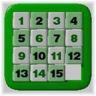
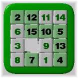
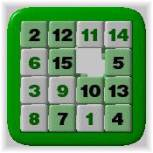
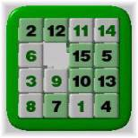

Problem N
15-Puzzle Problem
Input: standard input
Output: standard output
Time Limit: 45 seconds
The 15-puzzle
is a very popular game; even if you don't know it by that name, you've seen
it. It is constructed with 15 sliding tiles, each with a number from 1 to
15 on it, and all packed into a 4 by 4 frame with one tile missing. The
object of the puzzle is to arrange the tiles so that they are ordered as below:

Here the only legal operation is to exchange missing tile with one of the tiles with which it shares an edge. As an example, the following sequence of moves changes the status of a puzzle
|
 |
|
 |
 |
|
A random puzzle position |
The missing Tile moves to right. Denoted by R |
The missing Tile moves upwards. Denoted by U |
The missing Tile moves to the left. Denoted by L |

The letters in the previous row indicate which neighbor of the missing tile is swapped with it at each step; legal values are 'R','L','U' and 'D', for RIGHT, LEFT, UP, and DOWN, respectively.
Given an initial configuration of a 15-puzzle you will have to determine the steps that would make you reach the final stage. The input 15-puzzles requires at most 45 steps to be solved with our judge solution. So you will not be allowed to use more than 50 steps to solve a puzzle. If the given initial configuration is not solvable you just need to print the line “This puzzle is not solvable.”
Input
The first line of the input contains one integer N, which indicates how many sets of puzzle, will be given as input. Next 4N lines contain N sets of inputs. It means four lines make one set of input. Zero denotes the missing tile.
Output
For each set of input you will have to give one line of output. If the
input puzzle is not solvable then print the line “This puzzle is not solvable.”
If the puzzle is solvable then print the move sequence as described above to
solve the puzzle.
Sample Input:
2 Sample
Output:
2 3 4 0
1 5 7 8
9 6 10 12
13 14 11 15
13 1 2 4
5 0 3 7
9 6 10 12
15 8 11 14
This puzzle is not solvable.
Shahriar
Manzoor (Judge Solution Written by Munirul Abedin)
“The basic difference
between a scholar and an ordinary Man is
that a scholar is concerned
about sky and black hole, But an
ordinary man is more
interested in footpath and manhole.”